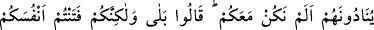
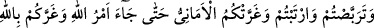
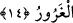

kendisi olması mümkündür. Ancak bu sûrun nasıl olduğunu yalnız Allah bilir. Çünkü
kıyâmet günü yeryüzü bir başka yeryüzü olacaktır. İbâdet yerlerinin cennet arzına
katılacağı muhakkak doğrudur. Böyle olunca Mescid-i Aksâ’nın cennetten, dışının
cehennemden olması, aralarında da bir sûrun bulunması hakîkatten uzak bir görüş
değildir.
14. Münâfıklar onlara: Biz sizinle beraber değil miydik? diye seslenirler.
(Mü’minler de) derler ki: Evet ama siz kendi başınızı belâya soktunuz; fırsat
beklediniz; şüpheye düştünüz ve kuruntular sizi aldattı. O çok aldatan (şeytan)
sizi, Allah hakkında bile aldattı. Nihâyet Allah’ın emri gelip çattı!
“Münâfıklar onlara: Biz sizinle beraber değil miydik? diye seslenirler.” Sanki onlar
sûr çekilirken ve azâbı gördükten sonra ne yapacakları sorulmuş gibi münâfıklar sûr’un
arkasından cevap olarak, mü’minlere seslenirler.
Kâşifî şöyle demiştir: “Münâfıklar yeniden baktıklarında bir nûr göremezler. Yeniden
mü’minlere yönelirler, fakat aralarında birbirlerini görmelerine engel olan bir duvar
çekilmiş olduğunu görürler. Duvarın kapısından baktıklarında mü’minlerin hoş bir
yürüyüşle cennete yöneldiklerine şâhid olurlar. Âh ü zâr ile bağırarak derler ki: Ey
mü’minler…”
“Biz sizinle beraber değil miydik?” Bununla dünyadayken namaz, oruç, karşılıklı
nikâh ve mîrâs gibi zâhirî işlerde mü’minlerle beraber olduklarını anlatmak isterler.
“(Mü’minler de) derler ki; Evet” görünürde bizimle beraberdiniz. “Ama siz kendi
başınızı belâya soktunuz;” Münâfıklık sebebiyle kendinizi harap ve mahvettiniz.
Fitnenin nefse yüklenmesi, yöneliş ve şehvetin nisbet edilmesi demektir. “Ey
âdemoğulları! Şeytan, sizi fitneye düşürmesin.” (el-Araf, 7/27) âyetinde olduğu gibi
fitnenin şeytana yüklenmesi ise vesvesenin ona nisbet edilmesidir. “Senden sonra biz
kavmini (Harun ile kalan İsrail oğullarını) imtihân ettik...” (Taha, 20/85) âyetinde
buyrulduğu gibi fitnenin Allah’a nisbet edilmesi ise, fitnenin yaratılmasının O’na nisbet
edilmesidir. Çünkü kendilerinde sapıklığı yaratması onları imtihân etmek içindir.
“Fırsat beklediniz;” Mü’minlerin başına bir felâket gelmesini beklediniz. Âyette
geçen terabbüs kelimesi, beklemek, gözlemek demektir.
Mukàtil demiştir ki; Hz. Muhammed’in (s.a.) ölmesini beklediniz ve o pek yakında
ölür, biz de ondan yana rahatlarız, dediniz. Bu ise çok çirkin bir vasıftır. Çünkü iyilik ve
hakka ulaştıran kimsenin ölümünü isteyip beklemek en büyük kabahat ve suçlardan